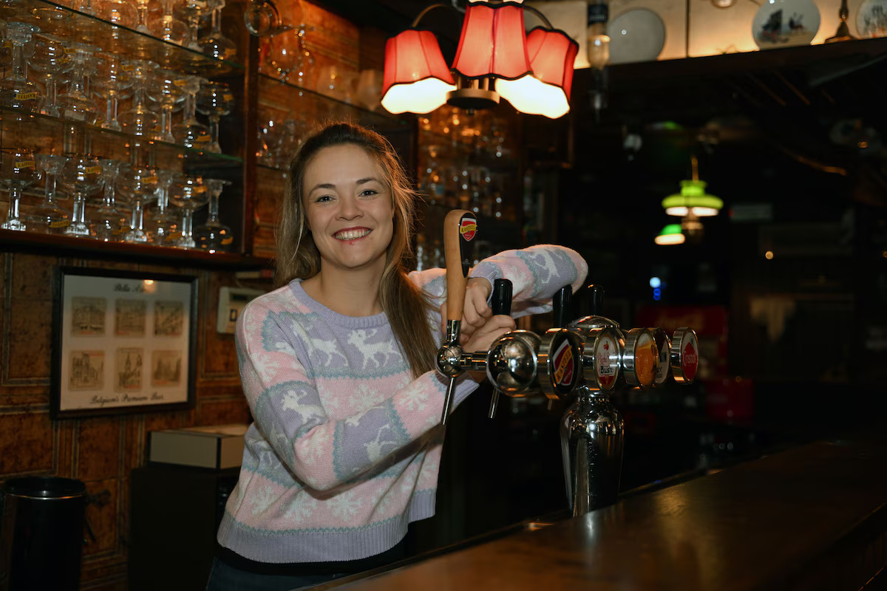

In den Boule
Join the legend.
Een Leuvense legende met karakter, geschiedenis en lange nachten. Van lunch tot late service, van vaste stamgasten tot nieuwe verhalen aan tafel: In den Boule voelt tegelijk iconisch en levendig.
- Keuken altijd doorlopend open
- Events met ticketverkoop
- Verhuur, cadeaubonnen en goodies
Adres
Augustijnenstraat 2, 3000 Leuven
Open
Zo: 20u-03u · Ma-Do: 11u-03u · Vr-Za gesloten
Keuken
Altijd doorlopend open
Het verhaal
Een plek waar traditie, gezelligheid en nieuwe energie samenkomen.
De homepage hoeft niet alles tegelijk te verkopen. Hier zetten we vooral het gevoel neer, en van hieruit begeleiden we bezoekers gericht naar menu, reservaties, events, shop of verhuur.
De sfeer
Een huis vol verhalen, karakterkoppen, volle glazen en avonden die blijven hangen.
Legendarisch
In den Boule heeft een eigen plaats in Leuven. Die herkenbaarheid mag ook online voelbaar zijn.
Levendig
Lunch, diner, events en late service vragen om een site die energie geeft zonder chaotisch te worden.
Gericht
Elke hoofdvraag krijgt zijn eigen pagina, zodat bezoekers sneller vinden wat ze nodig hebben en sneller doorklikken.
Ontdek
Eén sterke homepage, met aparte pagina’s voor elke belangrijke actie.
Eten & drinken
Bekijk kaart, suggesties en dranken zonder afleiding.
Naar menuTickets & avonden
Geef events hun eigen plek met ticket-CTA als hoofddoel.
Bekijk eventsBoek je tafel
Een duidelijke reservatiepagina werkt sneller dan een drukke homepage.
ReserveerCadeaubonnen & goodies
Extra omzet via een heldere shopflow buiten de zaal.
Naar shopHuur het café af
Capaciteit, formules en offerteaanvraag verdienen een eigen pagina.
Bekijk verhuurSnelle vraag
Voor algemene vragen, groepen of praktische info.
Neem contact op